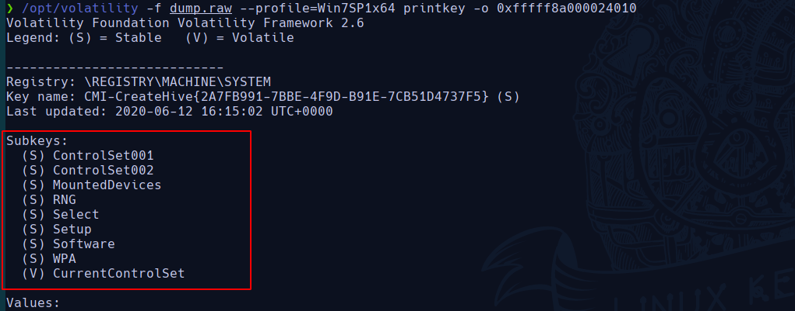

Retos de Forense
Challenge 1: Profile
Description
Determina el perfil de S.O. a utilizar con este volcado de memoria.
Solution
Lo primero es ver antes que tipo de SO nos encontramos, para ello el comando imageinfo nos ofrece una visión general sobre el volcado de memoria. Nosotros para determinar el profile del SO nos vamos a fijar en el campo que pone Suggested Profile.
/opt/volatility -f dump.raw imageinfo

Cómo vemos en la figura estamos ante un Windows 7 Service Pack 1 de 64bits.
Respuesta: flag{Win7SP1x64}
Challenge 2: Procesos
Description
¿Cuántos procesos había en ejecución en el equipo en el momento de la captura?
Solution
¿ Qué es un proceso? Un proceso es una instancia de un programa en ejecución. Programas y procesos son entidades distintas. En un sistema operativo multitarea, múltiples instancias de un programa pueden ejecutarse simultáneamente. Cada instancia es un proceso separado.
Veámos cuántos procesos estaban en ejecución en el momento de la captura, para ello usaremos el comando pslist que nos imprime todos los procesos que están corriendo.
/opt/volatility -f dump.raw pslist > procesos
Ahora hacemos un cat a procesos que es el fichero dónde hemos dumpeado el output del comando pslist.

Nosotros queremos contar las líneas a partir de la número 3 que es dónde empieza el primer proceso, para ello escribiremos:
sed -i "1,2d" procesos
wc -l procesos
Y la respuesta es 43 procesos.
Solution: flag{43}
Challenge 3
Description
¿Cuántas claves de registro hay en el raíz del hive SYSTEM? (incluyendo las volátiles)
Solution
Para hallar cuántas claves de registro hay en un hive en concreto, debemos usar la opción printkey que según el man de Volatility nos lo define de la siguiente manera:
- printkey: Print a Registry Key, and its subkeys and values
Sin embargo, nosotros debemos especificar a que hive queremos que se realice esta función. Para ello, veamos si printkey nos facilita el poder especificar una hive en concreto.
/opt/volatility printkey --help

Observamos que nos permite especificar un hive en concreto a través de su hive offset virtual.
Por tanto, veamos con hivelist cuál es su offset virutal de SYSTEM
/opt/volatility -f dump.raw --profile=Win7SP1x64 hivelist
Ahora sí, podemos usar el parámetro printkey -o especificando el **offset hive (virtual)
/opt/volatility -f dump.raw --profile=Win7SP1x64 printkey -o 0xfffff8a000024010

Hay un total de 9 subkeys.
Solution: flag{9}
Challenge 4: Password
Description
Necesitamos la contraseña de inicio de sesión del usuario Admin. ¿Cuál es?
Solution
Debemos saber que al igual que en Linux existe el /etc/shadow dónde se almacenan las passwords cifradas y nos da información de los usuarios que hay en el sistema, en Windows también tenemos este fichero que se encuentra en la siguiente ruta %SystemRoot%/system32/config/SAM. SAM
Ahora bien, veamos que existe una opción en volatility que nos permite dumpear la información de este fichero.
/opt/volatility -f dump.raw --profile=Win7SP1x64 hashdump > hash

Ahora entra en uso la herramienta John the ripper para crackear las passwords.
Si buscamos por internet el tipo de hash con el que windows almacena las passwords encontramos lo siguiente:

Por tanto, vamos a especificar en la opción --format en John que sea de tipo NT.
john --show --format=NT hash
- Con --show le decimos que nos muestre si ha conseguido crackear el hash
Solution : flag{administrador}